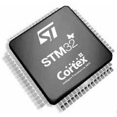
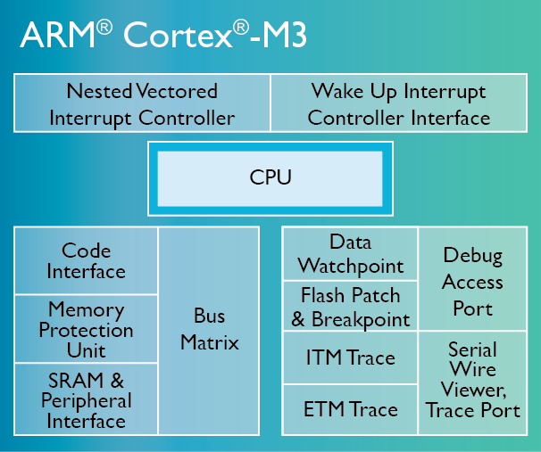

飛控是四軸的靈魂。那麼什麼是飛控呢？飛控其實就是四軸飛行器的電子控制部分，包括傳感器部分慣性導航模塊和控制部分的MCU。
四軸飛行器相對於常規航模來說，最複雜的就是電子部分。可以和其它兩種常見的航模固定翼以及直升機比較一下。在常規固定翼航模上，陀螺儀並非常用器件。相對操控難度大點的直升級航模，如果不做自動穩定系統，也只是鎖尾才用到陀螺儀。四軸飛行器則必須配備陀螺儀，這是最基本要求，不然無法飛行，更談不上飛穩了。不但要有，還得是3軸(X、Y、Z)都得有，這是四軸飛行器的機械結構、動力組成特性決定的。在此基礎上再輔以3軸加速度傳感器，這6個自由度，就組成了飛行姿態穩定的基本部分，也是關鍵核心部分慣性導航模塊，簡稱IMU。飛行中的姿態感測全靠這個IMU了，可見它是整架模型的核心部件。
IMU感知飛行器在空中的姿態，將數據送給處理器MCU。處理器MCU將根據用戶操作的指令，以及IMU數據，通過飛行算法控制飛行器的穩定運行。由於有大量的數據需要計算，而且需要實時性極高的控制，所以MCU的性能也決定了飛行器是否能夠飛得足夠穩定，靈活。
本篇文章只講飛控的MCU部分，將有另外一篇文章《飛控——傳感器》講解IMU部分內容。
Crazepony的主控MCU選用的是意法半導體的STM32f103T8U6，為32位ARM Cortex-M內核，最高72MHz。關於為什麼會選用這片MCU，在CamelGo的博客我和Crazepony的那點事兒(2)中有這麼一段描述。

曾經在猶豫用TI的430系列單片機還是意法半導的STM32。那是在我大二的時候，從來沒有接觸過STM32，以前都是用51單片機和TI的msp430系列單片機。好吧，我承認了，我做Crazepony其實是就是為了學習STM32的，沒有買過STM32相關的開發板，就這麼簡單粗暴大刀闊斧的開始了我的STM32之旅…
最終選擇用STM32當然還有其他原因，TI公司的MSP430系列都是基於低功耗在做文章，作為移動消費電子，對電源續航能力要求比較高的場合比較適用。
……
之所以選擇STM32F103T8U6作為Crazepony的主控芯片。首先因為他是crotex-M3內核，繼承了ARM的優良性能，主頻能跑到72MHz，3個通用定時器，1個高級定時器，7通道DMA控制器，而且總線接口資源豐富；其次是因為它VFQFPN36的封裝，只有6mm*6mm的佔地面積,對這個寸土寸金的項目來說簡直太讚了。這麼高的性價比，當然讓我選擇了他作為主控。72MHz雖然生不了孩紙，但是足以處理除了圖像之外的大部分任務了。
CamelGo說是誤打誤撞就選用了STM32作為主控MCU，其實真正在選型時候，有很多問題是需要我們考慮的，下面列舉出幾個最常見的問題。
綜合了這些因素，我們選擇了STM32這片MCU作為我們的主控MCU。我們也高興的看到，很多國內國外的四軸愛好者也選擇了這一片MCU。Crazepony不再孤獨！
由於STM32使用的是ARM Cortex-M架構，所以這裡有必要做一點ARM Cortex的普及。
ARM公司在經典處理器ARM11架構之後，為了給不同需求的CPU廠商提供服務，之後的內核架構命名都改為Cortex，並分成了A,R,M三類,也即將ARM的三個字母拆分為三個架構的名，代表著不同的發展方向：
所以，我們的STM32使用的Cortex-M3內核，就屬於ARM的M系列，主要針對嵌入式產品需求而設計的。下面是一張Cortex-M3的內核架構圖。
